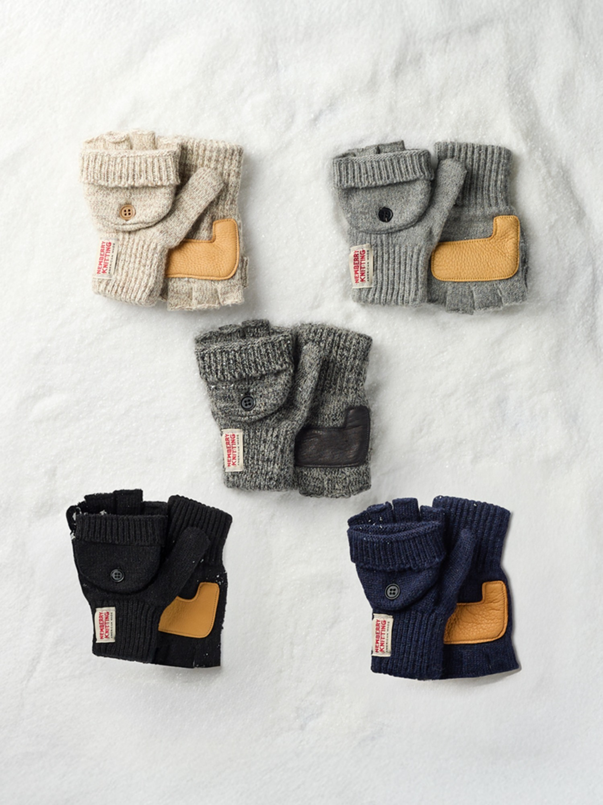

MY STORY
알려지지 않았지만,
오래 좋은 것을
찾았습니다.
유행보다 오래 남는 품질을 믿습니다. 아직 한국에 잘 알려지지 않은 좋은 제품을 찾아 직접 보고, 만지고, 소개하는 일을 하고 있습니다.

01 · THE BEGINNING
좋은 물건을
찾는 일에서 시작했습니다.
해외에는 오랜 역사와 좋은 품질을 가졌지만 한국에는 아직 잘 알려지지 않은 브랜드가 많습니다.
저는 그런 브랜드를 한국의 소비자에게 소개하고 싶어 여러 해외 박람회를 다녔습니다. 이름보다 제품을 먼저 보고, 직접 만져보고, 오래 쓸 수 있을지를 살폈습니다. 그러다 뉴베리니팅을 만났습니다.
한 번에 많은 양을 생산할 수 없는 수작업 장갑이었습니다. 그런데 바로 그 점이 마음에 남았습니다. 손으로 만든 촘촘한 짜임과 장인의 태도가 느껴졌고, 디자인은 귀여우면서도 누구나 편하게 들 수 있을 만큼 대중적이었습니다. 많이 만들 수 있어서가 아니라, 제대로 만들고 있어서 선택했습니다.
“빨리 많이 만드는 것보다,
손으로 제대로 만든 한 켤레가
더 오래 남는다고 믿습니다.”
02 · OUR STANDARD
기다림이 필요해도
바꾸지 않는 것이 있습니다.
뉴베리니팅은 찾는 사람이 많아져도 주문한 만큼 곧바로 만들어낼 수 있는 제품이 아닙니다.
인기가 있고 잘 팔릴수록 충분한 수량을 바로 준비하지 못하는 일이 어렵게 느껴집니다. 그렇다고 그 속도를 맞추기 위해 제품의 본질을 바꾸고 싶지는 않습니다.
가격을 낮추려고 원단을 덜 쓰거나, 값싼 원사로 바꾸거나, 손쉽게 생산 방식을 옮기는 선택은 하지 않습니다. 기다리는 시간이 생기더라도 장갑을 처음 선택했던 이유까지 사라지게 만들 수는 없기 때문입니다.
온라인으로 판매하다 보니 고객을 직접 만나는 일은 드뭅니다. 그래서 길을 걷거나 카페에 앉아 있을 때, 누군가 뉴베리니팅 장갑을 끼고 있는 모습을 우연히 만나면 무척 반갑습니다. 주문서 속 이름으로만 알던 제품이 한 사람의 일상에서 쓰이고 있다는 사실을 그때 실감합니다.
OUR JOURNEY
좋은 것을 발견해
전하기까지
- 01
SEARCH
해외 박람회를 다니다
한국에 아직 알려지지 않은, 역사와 품질을 갖춘 브랜드를 찾아 직접 경험했습니다.
- 02
DISCOVER
뉴베리니팅을 발견하다
수작업의 흔적과 장인의 태도, 귀엽고 대중적인 디자인에서 오래 갈 가능성을 보았습니다.
- 03
INTRODUCE
한국의 겨울에 소개하다
빠르게 소비되는 유행보다 매년 다시 꺼내고 싶은 장갑을 전하기 시작했습니다.
- 04
NOW
만드는 시간을 지키다
수요가 늘어도 품질을 위해 필요한 기다림을 지키며 한 켤레씩 소개하고 있습니다.
MY PROMISE
좋은 제품,
오래 사용하고 싶은 제품,
믿음을 줄 수 있는 제품을 만들겠습니다.